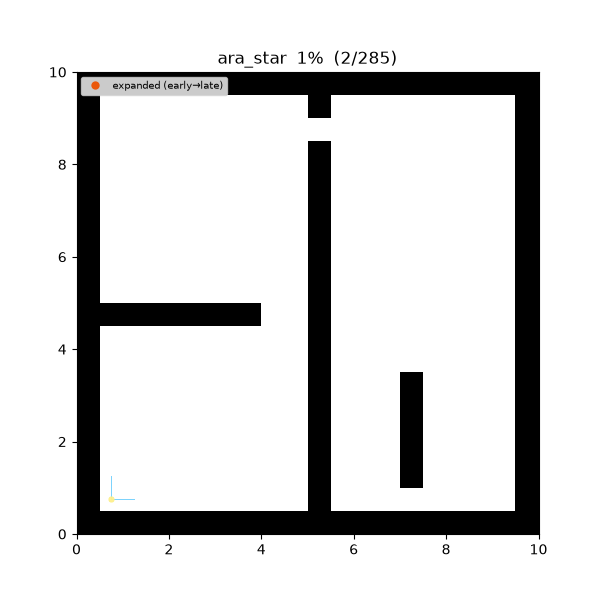
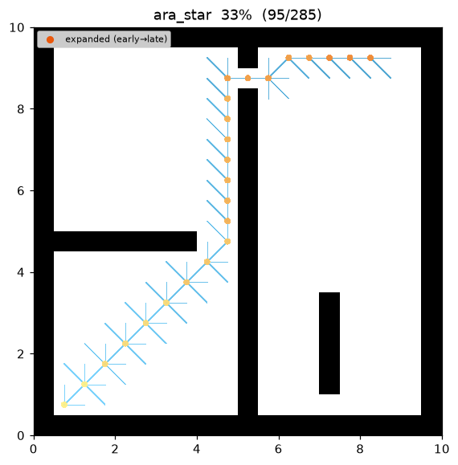
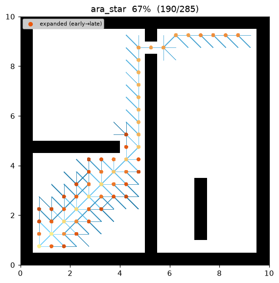
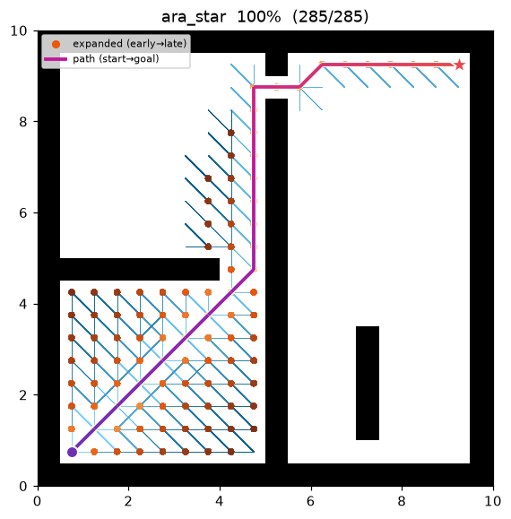

ARA (Anytime Repairing A)¶
| 항목 | 내용 |
|---|---|
| 분류 | anytime informed graph search |
| 요구 capability | DiscreteSpace (neighbors + heuristic) |
| 완전성 | complete (유한 그래프, 비음수 비용) |
| 최적성 | anytime bounded-suboptimal — 각 해는 ε-준최적, ε → 1 이면 최적 |
| 복잡도 | weighted A* 반복 × ε 단계 수. 이전 탐색을 재사용해 재시작보다 저렴 |
| 원 논문 | Likhachev, Gordon & Thrun (2003) 1 |
배경¶
시간 예산이 정해진 로봇은 "느리지만 최적"보다 "빠르게 쓸 만한 해를 낸 뒤 시간이 남는 만큼 개선"하는 편이 낫다. ARA*1 는 이 anytime 성질을 A* 위에 얹은 알고리즘이다.
핵심 아이디어는 weighted A*2 를 ε 를 줄여가며 여러 번 도는 것이다. f = g + ε·h (ε ≥ 1) 로 큰 ε 에서 시작하면 첫 해를 빠르게 얻는다(그 대신 비용 ≤ ε·C* 로 준최적). 이후 ε 를 조금씩 줄이며 다시 탐색하되, 매 반복이 이전 탐색의 결과를 재사용하도록 만든 것이 ARA* 의 기여다. 순진하게 ε 마다 A* 를 재시작하면 같은 노드를 반복 확장해 낭비가 크다.
재사용의 열쇠는 두 가지다.
- INCONS 리스트. 어떤 상태 s 의 g 가 낮아졌는데 s 가 이미 확장(CLOSED)되었다면, s 를 OPEN 에 되돌리지 않고 INCONS 에 모아 둔다. 현재 ε 반복에서는 s 를 다시 확장하지 않는다는 뜻이다.
- 다음 반복의 재개장. ε 를 줄일 때
OPEN ← OPEN ∪ INCONS로 합치고 모든 키를 새 ε 로 재계산한 뒤 CLOSED 를 비운다. 즉 지난 반복에서 "개선됐지만 미뤄둔" 상태들만 다음 라운드의 씨앗이 되어, 바뀐 부분만 국소적으로 repair 한다.
동작 원리¶
maze01 에서 ε 를 줄여가며 파면이 반복 성장하는 모습:

탐색 중간 과정 (좌 → 우: 초반 큰 ε / 중반 / 최종 ε = 1 경로):
 |
 |
 |
IMPROVE-PATH(ε): # 한 번의 weighted-A* 반복
while g(goal) > min key in OPEN: # goal 이 최소 키가 되면 ε-준최적 확정
s ← OPEN.pop_min() # key(s) = g(s) + ε·h(s)
CLOSED ← CLOSED ∪ {s}
for (s', c) in neighbors(s):
if g(s) + c < g(s'): # relaxation
g(s') ← g(s) + c; parent(s') ← s
if s' ∉ CLOSED: OPEN.push(s', key(s'))
else: INCONS ← INCONS ∪ {s'} # 재확장 대신 미룸
ARA*(start, goal):
g(start) ← 0; ε ← ε0
OPEN ← {start}; INCONS ← CLOSED ← ∅
IMPROVE-PATH(ε); publish(path, bound = ε) # 첫 해 (anytime)
while ε > 1:
ε ← max(1, ε − Δε)
OPEN ← OPEN ∪ INCONS; recompute keys; CLOSED ← ∅ # 재개장
IMPROVE-PATH(ε); publish(path, bound = ε) # 개선된 해 (anytime)
return 마지막(가장 optimal) 경로
IMPROVE-PATH 의 종료 조건 g(goal) ≤ min key in OPEN 이 핵심이다. OPEN 최소 키가 goal 의
비용 이상이면 더 짧은 경로가 남아 있을 수 없으므로, 그 시점의 g(goal) 은 ε-준최적임이 보장된다.
이 구현은 lazy heap 을 써서 키가 낮아져 재삽입된 상태의 옛 항목은 pop 시 건너뛴다(별도 decrease-key
자료구조 없음). 두 언어는 같은 경로·비용을 반환하지만, 동일 키 상태가 재삽입될 때 삽입 순서 seed 가
unordered-set 순회에 의존해 언어 간 다르므로 확장 순서는 노드 몇 개 차이가 날 수 있다.
heuristic 은 A* 와 동일한 8-connected octile distance 를 DiscreteSpace capability 에서
받는다 — 알고리즘은 이동 모델을 모른다.
성질¶
- 완전성: 유한 그래프 + 비음수 비용에서 완전.
- anytime:
eps_start로 첫 해를 빠르게 내고, ε 를 줄이는 매 반복마다 더 좋거나 같은 해를 방출한다. 언제 중단해도 그 시점 최선 해의 준최적 한계(= 현재 ε)를 알고 있다. - 각 해의 준최적 한계: ε 반복이 반환하는 경로 비용 ≤ ε · C* 2.
- 수렴:
eps_final = 1.0이면 마지막 반복은 admissible A* 와 동일한 최적해다. - 효율: INCONS 재사용 덕분에 각 상태는 한 ε 반복에서 최대 한 번만 확장된다. ε 마다 A* 를 재시작하는 것보다 총 확장 수가 적다1.
준최적 한계 증명¶
기호: \(f(n)=g(n)+\varepsilon\,h(n)\), \(h\) 는 admissible (\(0\le h\le h^\ast\)), \(C^\ast\) 는 최적 비용.
정리 (각 IMPROVE-PATH 는 ε-준최적). IMPROVE-PATH(ε) 가 종료했을 때 반환 경로 비용
\(g(\text{goal})\le \varepsilon\,C^\ast\).
증명. 종료 시 \(g(\text{goal})\le \min_{s\in\text{OPEN}} key(s)\). 최적 경로 위의 어떤 노드 \(n\) 이 OPEN 에 존재한다(확장된 접두부에서 goal 로 가는 최적 경로가 frontier 를 가로지른다). 그 \(n\) 에 대해 \(g(n)\le g^\ast(n)\) 이고 admissibility 로
(\(\varepsilon\ge1\) 이므로 \(g(n)\le\varepsilon\,g(n)\)). 따라서
\(\varepsilon=1\) 이면 한계가 \(C^\ast\) 로 조여져 최적이 된다(A* 정리 1 과 동치). ε 를 단조 감소시키므로 방출되는 해의 비용도 단조 비증가하며, 마지막 해가 가장 optimal 하다. ∎
파라미터¶
| 이름 | 타입 | 기본값 | 범위 | 설명 |
|---|---|---|---|---|
eps_start |
float | 2.5 | [1.0, 10.0] | 첫 반복의 ε0. 클수록 첫 해가 빠르고 준최적 |
eps_final |
float | 1.0 | [1.0, 10.0] | 마지막 ε. 1.0 = 최적해 반환 |
eps_step |
float | 0.5 | [0.01, 10.0] | 반복마다 ε 감소량 (ε ← max(eps_final, ε − eps_step)) |
max_expansions |
int | 2000000 | [1, 1e8] | 전체 반복 누적 확장 상한 (발산 안전장치) |
eps_start 를 eps_final 로 두면 ARA* 는 단일 weighted A* 로 퇴화하고, 둘 다 1.0 이면 A* 와 같다.
방출 trace 이벤트¶
planning_started → (node_expanded, candidate_evaluated, edge_added)* → path_found
(ε 반복마다, anytime) → … → path_found(최종) → planning_finished
References¶
-
Likhachev, M., Gordon, G., & Thrun, S. (2003). "ARA*: Anytime A* with Provable Bounds on Sub-Optimality." Advances in Neural Information Processing Systems (NIPS) 16. ↩↩↩
-
Pohl, I. (1970). "Heuristic search viewed as path finding in a graph." Artificial Intelligence, 1(3–4), 193–204. doi:10.1016/0004-3702(70)90007-X ↩↩